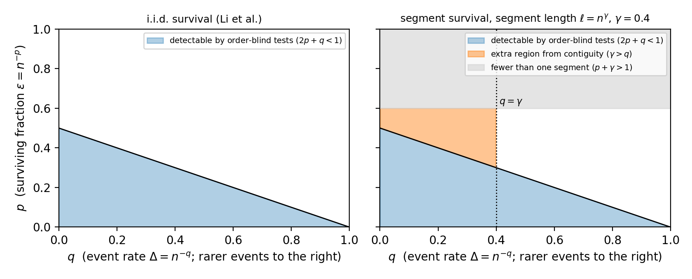
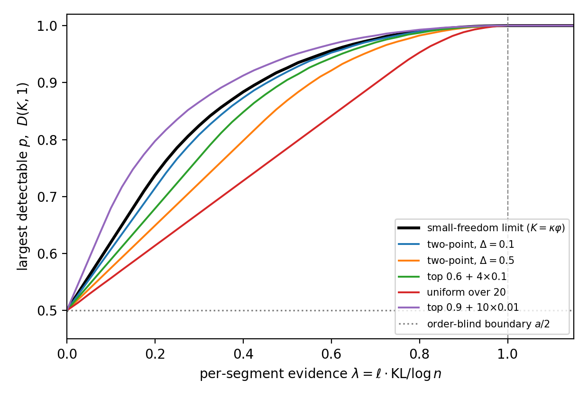
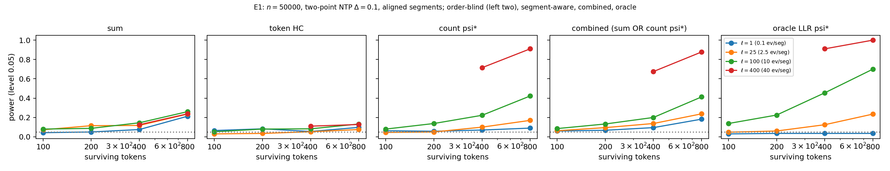
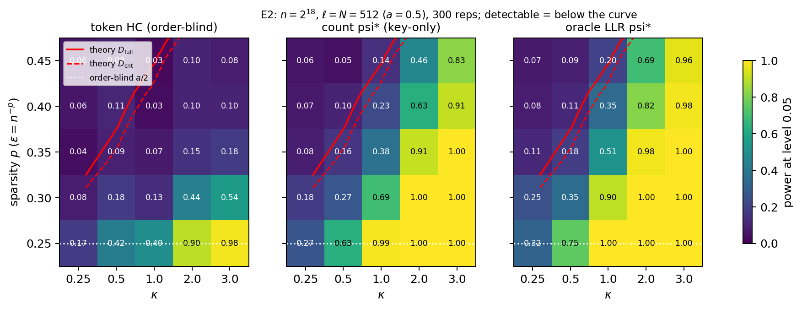
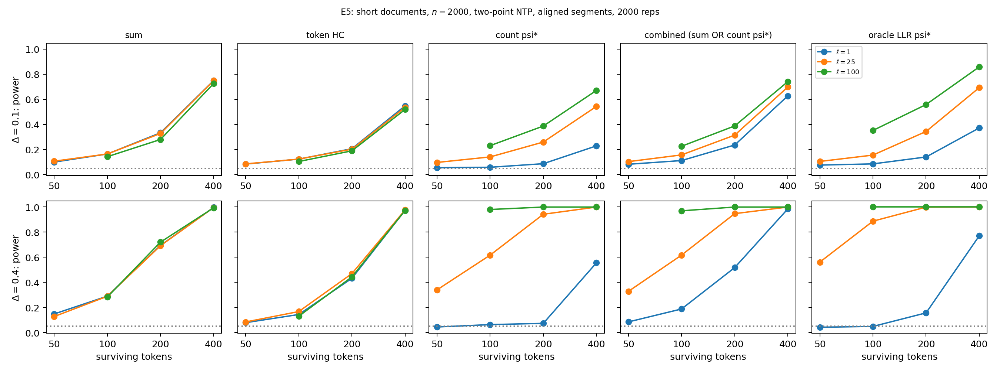

A Gumbel-max watermark is detected from one “pivot” per token, which is uniform on text the watermarked model did not produce and pushed toward \(1\) on text it did. After human editing, only a small fraction of tokens keep the watermark. The existing optimal theory treats these survivors as scattered independently, and its tests ignore token order. In practice, when a person rewrites some sentences and keeps others, or pastes AI passages into their own writing, the survivors form contiguous segments. We keep the same null hypothesis but let the alternative be “the watermark survives in segments of at least \(\ell\) tokens.”
In an explicit theoretical sandbox we show: (i) tests that ignore token order are stuck at the old detection boundary however long the segments are; (ii) contiguity helps exactly when one segment carries enough evidence, measured by its expected log-likelihood ratio (for nearly deterministic text, the number of non-greedy word choices it contains); (iii) at the critical scale, Higher Criticism applied across blocks of tokens attains a sharp boundary, which reaches full detectability exactly when one segment's expected log-likelihood ratio exceeds \(\log N\), the log of the number of blocks. A key-only count test captures most of the gain, and simulations agree with the theory.
A Gumbel-max watermark gives every token \(t\) a pivot \(Y_t\in[0,1]\): exactly uniform on human-written text, and pushed toward \(1\) on text the watermarked model produced. Detection is a hypothesis test on the pivots. After editing, only a fraction \(\varepsilon\) of tokens keep the watermark, which is the rare/weak setting where Higher Criticism (HC) is the natural detector. The existing optimal theory (Li, Ruan, Wang, Long & Su, 2025) assumes the surviving tokens are scattered independently.
We keep the null hypothesis (no watermark anywhere) and change only the alternative: the watermark survives in runs of at least \(\ell\) tokens covering a fraction \(\varepsilon\) of the text, in arbitrary positions. The hardest such arrangement is “each sentence-sized block survives independently”: Li et al.'s model one level up, with blocks in place of tokens. The sparsity is over blocks, which suggests the detector: sum each block's evidence, then apply HC across blocks.
Any test that depends only on the histogram of pivots (the sum test, token-level HC, Li et al.'s Tr-GoF) has exactly the old detection boundary, however long the segments are. Shuffling the tokens does not change what such a test sees.
A token carries evidence only when the model had freedom of choice. Contiguity helps exactly when a segment accumulates enough evidence, measured by its expected log-likelihood ratio (roughly, the number of non-greedy word choices it contains).
At the critical scale, HC across blocks attains an optimal boundary. It always beats order-blind tests and reaches full detectability exactly when one segment's evidence exceeds \(\log N\), where \(N\) is the number of blocks.
Counting near-1 pivots per block and running HC across blocks needs only the secret key, not the model's probabilities, and recovers most of the gain.

Coarse phase diagram. Under scattered survival, detection is possible only in the blue region. With segments longer than \(1/\Delta\), segment-aware tests also detect in the orange region, where every order-blind test fails.

Sharp boundary vs. evidence per segment. For several next-token distributions, all curves start at the order-blind boundary and reach full detectability at the same point; in between, “spiky” evidence is easier to detect than evenly spread evidence.

Segment length (n = 50,000). Same number of surviving tokens, longer segments: order-blind tests do not improve, while segment-aware tests go from no power to full power as the segments carry more evidence.

Finite-sample phase diagram (n = 218). Token-level HC detects only near the old boundary, while HC across blocks keeps power far beyond it, even with only two watermarked segments.

Essay-length text (n = 2,000). When a sentence carries enough evidence (\(\Delta=0.4\), bottom row), four surviving sentences are detected with power 0.89 by the block test, against 0.29 for the sum test. In low-entropy text (\(\Delta=0.1\), top row) the gain appears only for paragraph-length segments.